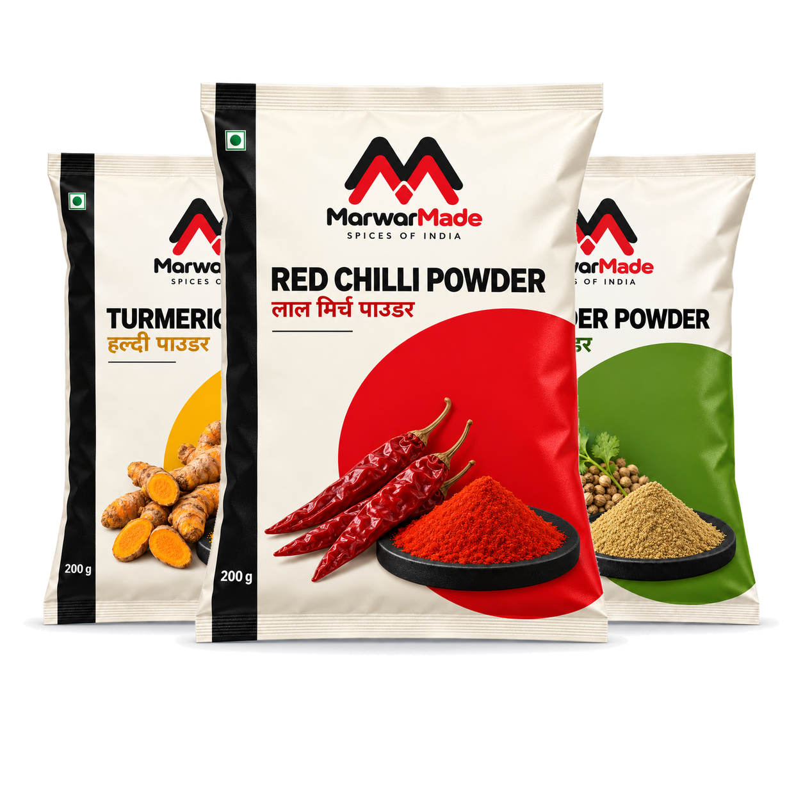
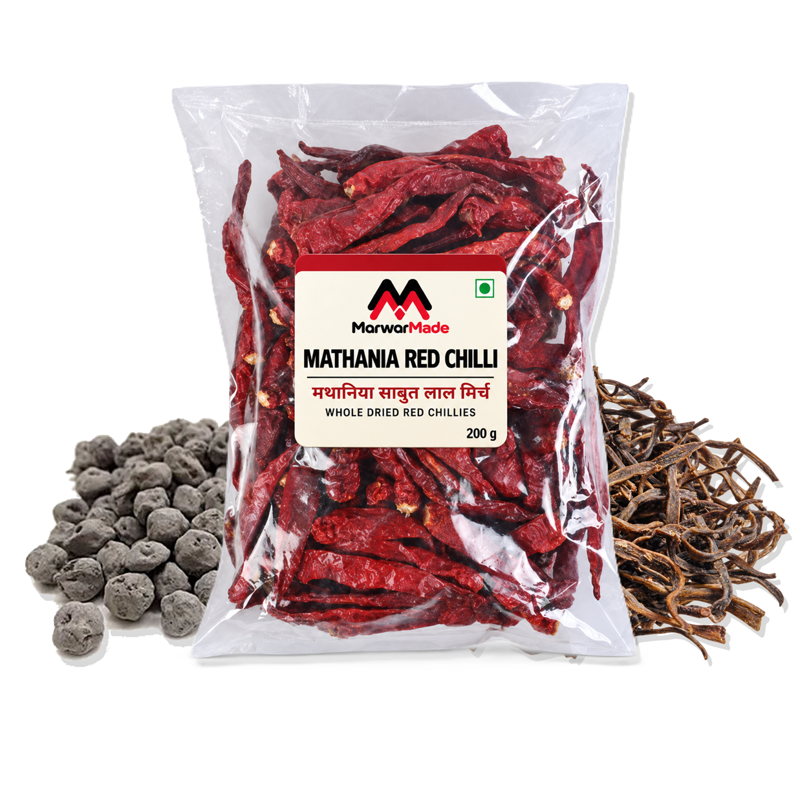

MARWARMADE FOODS
Everyday spices, rooted in Rajasthan.
Bring home the colour, aroma and warmth of Rajasthan through spices and ingredients made for the meals your family cooks every day.
EVERYDAY SPICES
Slowly stone-ground at a cool temperature, with no artificial colour or added starch—so every pinch brings the spice’s natural colour, aroma and character to your cooking.
View Products

RAJASTHAN SPECIALS
Ker, Sangri and Mathania Red Chilli—the ingredients that bring the familiar depth of Ker Sangri, dry sabzi and Jodhpur-style cooking to the table.
View Products